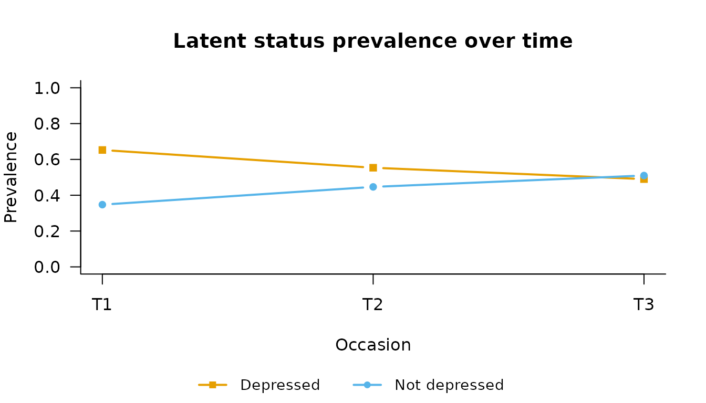

Latent transition analysis (LTA) is the longitudinal extension of LCA in which cases can move: at each occasion every case occupies a latent status, and the model estimates both what the statuses look like (measurement) and the probabilities of moving between them from one occasion to the next (transitions) (Collins & Lanza, 2010, ch. 7–8).
Simulated example: depression status across three assessments
We simulate 1,000 adults assessed three times on four binary symptom indicators. The truth has two statuses — Depressed and Not depressed — with most people staying where they are between assessments, and remission (Depressed → Not depressed) more common than onset:
set.seed(2026)
n <- 1000
rho <- c(Depressed = 0.85, `Not depressed` = 0.15) # P(symptom | status)
tau <- matrix(c(0.80, 0.20, # Depressed -> (Depressed, Not)
0.10, 0.90), # Not depressed-> (Depressed, Not)
2, 2, byrow = TRUE)
status <- matrix(0L, n, 3)
status[, 1] <- rbinom(n, 1, 0.35) + 1L # 1 = Depressed, 2 = Not
for (t in 2:3)
status[, t] <- ifelse(runif(n) < tau[status[, t - 1], 1], 1L, 2L)
sym <- matrix(0L, n, 12)
for (t in 1:3) for (j in 1:4)
sym[, (t - 1) * 4 + j] <- rbinom(n, 1, rho[status[, t]])
colnames(sym) <- paste0("sym", 1:4, "_t", rep(1:3, each = 4))Fitting the LTA
fit_lta() needs the number of statuses and how the
columns divide into occasions. By default the item-response
probabilities are held equal across occasions
(measurement_invariance = "full"), which is what makes “the
same status at different times” a meaningful phrase:
fit <- fit_lta(sym, n_statuses = 2, times = 3, measurement = "binary",
n_init = 20, random_state = 3)
fit
#>
#> =========================================================
#> LATENT TRANSITION ANALYSIS
#> =========================================================
#> Latent statuses : 2
#> Items x Occasions : 4 x 3
#> Item parameters : binary, held equal across occasions
#> Transitions : 2 tables, one per pair of occasions
#> Converged : TRUE (in 8 iterations)
#> ---------------------------------------------------------
#> Log-Likelihood : -6438.55
#> Parameters : 13
#> BIC : 12966.90
#> Rel. Entropy : 0.8846
#> ---------------------------------------------------------
#> Latent status prevalences by occasion:
#> Status 1 Status 2
#> T1 0.6526 0.3474
#> T2 0.5535 0.4465
#> T3 0.4901 0.5099
#> =========================================================
#> Type summary(model) for transitions, measurement_summary(model) for items.The two core quantities of an LTA are the status prevalences at each occasion and the transition matrices:
status_prevalences(fit)
#> Status 1 Status 2
#> T1 0.6525939 0.3474061
#> T2 0.5534904 0.4465096
#> T3 0.4900659 0.5099341
transition_matrix(fit)
#> $`T1 -> T2`
#> to
#> from Status 1 Status 2
#> Status 1 0.80524682 0.1947532
#> Status 2 0.08057212 0.9194279
#>
#> $`T2 -> T3`
#> to
#> from Status 1 Status 2
#> Status 1 0.7947163 0.2052837
#> Status 2 0.1124232 0.8875768The recovered transitions sit close to the generating matrix: strong
diagonal (stability), with the Depressed → Not depressed cell larger
than its mirror image. plot() shows both:

Is the transition process the same at every interval?
transition_invariance = "full" forces one transition
matrix for all intervals; comparing it against the unrestricted model is
a likelihood- ratio test of a time-homogeneous process:
fit_hom <- fit_lta(sym, n_statuses = 2, times = 3, measurement = "binary",
transition_invariance = "full", n_init = 20,
random_state = 3)
longitudinal_lrt(fit_hom, fit)
#>
#> Likelihood-ratio test for nested longitudinal models
#> ---------------------------------------------------------
#> Restricted : LL = -6439.2904 parameters = 11
#> Full : LL = -6438.5480 parameters = 13
#> -2 x diff : 1.4848 df = 2 p = 0.476
#> The restriction is not rejected; prefer the more parsimonious model.As simulated (one matrix generated both intervals), the restriction is not rejected, and the more parsimonious homogeneous model is preferable.
A mover-stayer model
A mover-stayer model (Vermunt, 2004) adds a latent class above the chain: one group transitions freely (the movers) while the other is locked in place (the stayers). It answers a question a single chain cannot: is apparent stability just slow movement, or is there a genuinely immobile group?
fit_ms <- fit_lta(sym, n_statuses = 2, times = 3, measurement = "binary",
mover_stayer = TRUE, n_init = 20, random_state = 3,
max_iter = 2000)
fit_ms
#>
#> =========================================================
#> LATENT TRANSITION ANALYSIS
#> =========================================================
#> Latent statuses : 2
#> Latent classes : 2, the last restricted to no change (mover-stayer)
#> Items x Occasions : 4 x 3
#> Item parameters : binary, held equal across occasions
#> Transitions : 2 tables, one per pair of occasions
#> Converged : TRUE (in 1230 iterations)
#> ---------------------------------------------------------
#> Log-Likelihood : -6439.02
#> Parameters : 15
#> BIC : 12981.66
#> Rel. Entropy : 0.8844 (status)
#> 0.5944 (class)
#> ---------------------------------------------------------
#> Latent class sizes:
#> Class 1 (mover) Class 2 (stayer)
#> 0.9066 0.0934
#>
#> Latent status prevalences by occasion (whole sample):
#> Status 1 Status 2
#> T1 0.6526 0.3474
#> T2 0.5533 0.4467
#> T3 0.4902 0.5098
#>
#> Note: standard errors are not available for a mixture over chains.
#> Every parameter here is a point estimate.
#> =========================================================
#> Type summary(model) for transitions, measurement_summary(model) for items.On these data the mover-stayer model offers no improvement — the data were generated from a single chain, and the fitted stayer class is essentially redundant. On real data, comparing the two BICs (single chain vs. mover-stayer) is the standard way to decide.
References
Collins, L. M., & Lanza, S. T. (2010). Latent class and latent transition analysis: With applications in the social, behavioral, and health sciences. Wiley.
Vermunt, J. K. (2004). Mover-stayer models. In M. S. Lewis-Beck, A. Bryman, & T. F. Liao (Eds.), The SAGE encyclopedia of social science research methods (Vol. 3, p. 666). SAGE Publications. https://doi.org/10.4135/9781412950589.n583